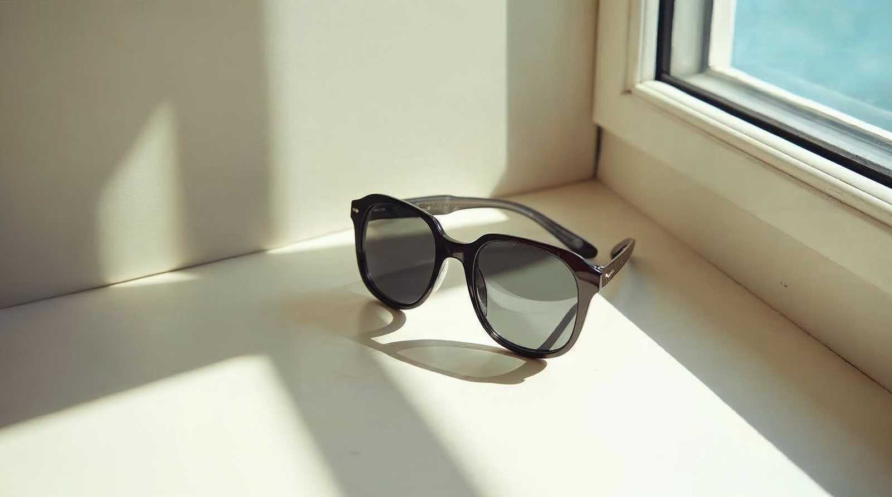
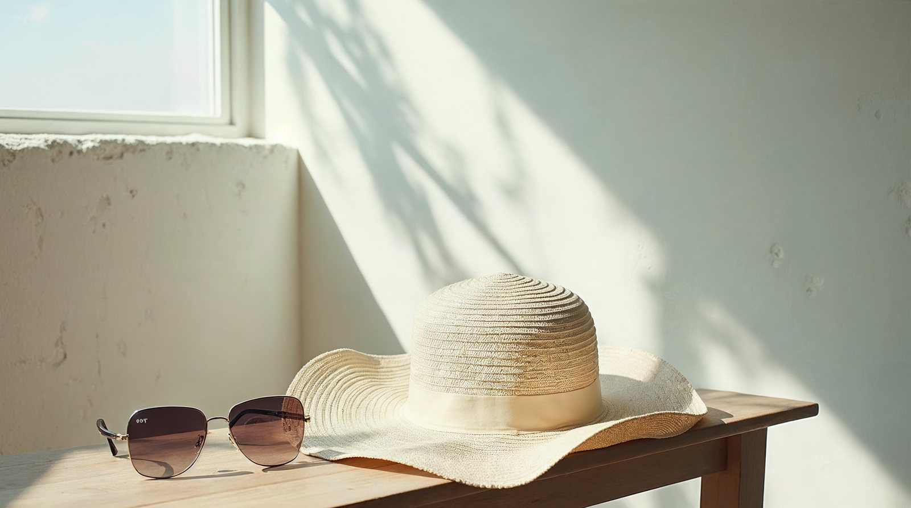
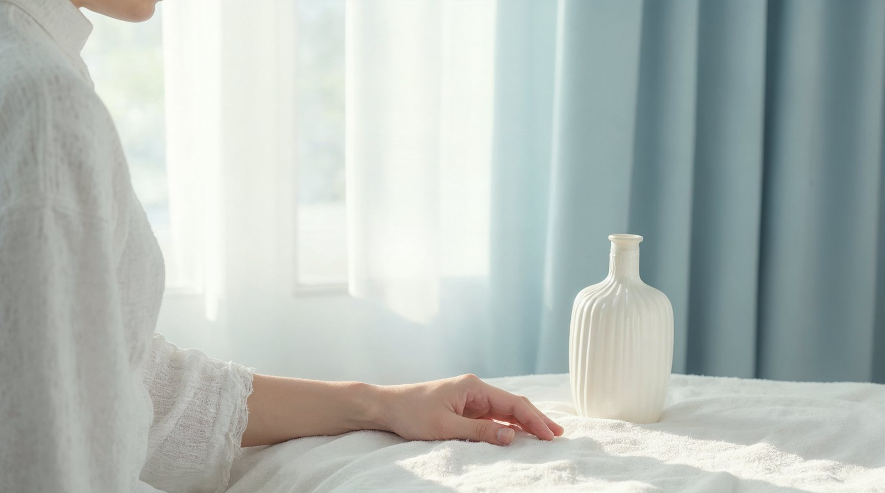
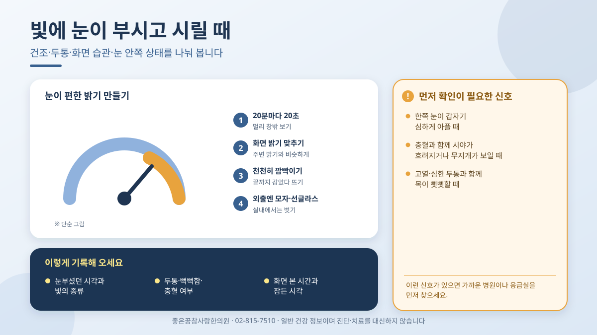

이종호 한의사 감수좋은꿈참사랑한의원 대표원장 (한의사 면허번호 19769)발행 2026-11-26 · 수정 2026-11-27
이 글의 차례
점심을 먹고 회사 건물 밖으로 나서는 순간, 쏟아지는 햇빛에 눈을 질끈 감게 돼요. 함께 나온 동료들은 아무렇지 않게 걸어가는데 나만 눈이 시리고 눈물이 맺히죠. 사무실에 돌아와서도 모니터 밝기를 몇 번이나 낮추고, 형광등 아래에서 눈살을 찌푸린 채 오후를 보내게 됩니다.
빛에 눈이 유난히 부시고 불편한 상태를 광과민, 또는 눈부심이라고 불러요. 그러니까 사실은 '빛이 센 것'과 '내 눈이 빛을 세게 받아들이는 것'은 다른 얘기예요. 빛 자체가 해로운 게 아니라, 같은 밝기를 눈과 뇌가 더 강하게 받아들이는 상태라고 이해하시면 쉬워요. 그래서 사람마다 불편을 느끼는 밝기의 기준이 꽤 다르거든요.
광과민은 그 자체로 하나의 병이라기보다 여러 상태에서 함께 나타나는 증상이에요. 눈이 건조한 분, 편두통이 있는 분, 모니터를 오래 보는 분, 눈 안쪽에 염증이 생긴 분에게서 모두 나타날 수 있어요. 그래서 저는 진료실에서 눈부심과 함께 오는 다른 불편을 먼저 여쭤요.
선글라스를 실내에서도 벗지 못하겠다는 분, 밤 운전 때 마주 오는 차 불빛이 번져 보여 운전이 겁난다는 분, 스마트폰 화면을 가장 어둡게 해야 볼 수 있다는 분도 계세요. 예민한 성격이라서 그런 게 아니에요. 불편의 모양이 다르면 살펴볼 방향도 조금씩 달라지는 거예요.

광과민은 어떤 상태를 말하나요?
눈은 들어오는 빛의 양을 동공 크기로 조절합니다. 밝은 곳에서는 동공이 작아지고, 어두운 곳에서는 커집니다. 이렇게 걸러진 빛이 망막에 닿으면 그 신호가 시신경을 따라 뇌로 전해져 밝기와 모양을 알아차립니다.
광과민은 이 과정 어딘가가 예민해진 상태입니다. 눈 표면이 말라 빛이 고르게 퍼지지 못하고 번지는 경우도 있고, 눈 안쪽에 염증이 생겨 빛이 들어올 때 통증이 생기는 경우도 있습니다. 눈은 괜찮은데 빛 신호를 받아들이는 뇌 쪽이 예민해진 경우도 있습니다.
그래서 눈부심이라는 같은 말에도 결이 다릅니다. 빛이 번지고 퍼져 보이는 눈부심, 빛을 보면 눈이 시리고 아픈 눈부심, 빛을 보면 머리가 울리고 속이 불편해지는 눈부심을 나눠서 들으면 원인을 짐작하는 데 도움이 됩니다.
왜 빛이 유난히 눈부시게 느껴질까요
진료실에서 광과민과 함께 자주 확인하는 이유는 이렇습니다.
- 눈물이 부족하거나 빨리 말라 눈 표면이 거칠어진 안구건조
- 편두통이 있어 두통 전후로 빛과 소리에 예민해지는 경우
- 모니터와 스마트폰을 오래 봐서 눈 주변 근육이 지친 경우
- 잠이 부족하고 긴장이 이어져 감각 전반이 예민해진 경우
- 콘택트렌즈를 오래 끼거나 렌즈 관리가 어려운 경우
- 백내장처럼 수정체가 흐려져 빛이 퍼져 보이는 경우
- 눈 안쪽 염증, 각막 상처처럼 안과 확인이 필요한 경우
- 일부 약을 드시면서 빛에 예민해진 경우
이 가운데 안구건조와 편두통이 가장 흔하게 겹쳐 있습니다. 눈이 건조하면 눈 표면이 고르지 않아 빛이 사방으로 흩어지고, 편두통이 있으면 두통이 없는 날에도 빛에 예민한 상태가 이어지기도 합니다.
한의학에서는 간의 기운이 눈과 이어져 있다고 보아, 긴장과 피로가 쌓여 열이 위로 오르면 눈이 쉽게 시리고 부시다고 표현하기도 합니다. 진찰에서 쓰는 전통적인 설명 방식이며, 안과 검사 결과와 생활을 함께 놓고 판단합니다.
비슷해 보여도 나눠 보는 것들
양쪽 눈이 함께 부시고, 뻑뻑하고 모래가 들어간 듯한 느낌이 같이 있다면 안구건조를 먼저 생각합니다. 오후로 갈수록, 화면을 오래 볼수록 심해지고, 인공눈물을 넣으면 잠깐 편해지는 흐름을 보이는 경우가 많습니다.
빛을 보면 머리가 지끈거리고, 소리와 냄새에도 예민해지며, 속이 메슥거린다면 편두통 쪽을 함께 살핍니다. 이 경우 눈부심은 두통이 오기 전 신호처럼 나타나기도 하고, 두통이 지나간 뒤에도 하루 이틀 남기도 합니다.
밤에 불빛 주변으로 빛 번짐이 보이고 시야가 뿌옇다면 수정체나 각막 상태를 안과에서 확인받는 것이 좋습니다. 특히 연세가 드시면서 눈부심이 서서히 늘었다면 백내장 여부를 확인해 보시길 권합니다.
한쪽 눈만 갑자기 부시면서 아프고 충혈되며 시야가 흐려진다면 눈 안쪽 염증이나 안압 문제를 먼저 확인해야 합니다. 이런 경우는 생활 관리보다 안과 진료가 먼저입니다.
화면과 실내 불빛이 눈부심을 키울 때
요즘 광과민을 말씀하시는 분 가운데 상당수는 하루 대부분을 화면 앞에서 보냅니다. 화면을 볼 때는 눈 깜빡임이 평소의 절반 가까이 줄어 눈 표면이 쉽게 마릅니다. 마른 눈은 같은 밝기도 더 부시게 느끼고, 다시 찡그리면서 눈 주변 근육까지 지칩니다.
모니터가 창문을 등지고 있거나, 천장 등이 화면에 그대로 비치면 눈은 하루 종일 밝기 차이를 맞추느라 바쁩니다. 화면을 창과 직각이 되게 두고, 화면 밝기를 주변 밝기와 비슷하게 맞추는 것만으로도 눈부심이 덜하다고 말씀하시는 분이 많습니다.
밤에 불을 모두 끄고 스마트폰만 보는 습관도 눈을 지치게 합니다. 어두운 방에서 밝은 화면을 보면 동공이 크게 열린 채 강한 빛을 받게 됩니다. 잠들기 전 화면을 보신다면 은은한 스탠드를 하나 켜 두고, 화면 밝기를 낮춰 보세요.

계절과 시기에 따라 달라지는 눈부심
겨울에는 해가 낮게 떠서 햇빛이 눈높이로 바로 들어오고, 눈이 쌓인 날에는 바닥에서 반사된 빛까지 더해집니다. 난방으로 실내 공기가 건조해지면 눈 표면도 쉽게 말라, 겨울 들어 눈부심이 부쩍 늘었다고 말씀하시는 분이 많습니다.
봄에는 꽃가루와 미세먼지로 눈이 가렵고 충혈되면서 빛에 예민해지기 쉽습니다. 여름에는 햇빛이 강하고 자외선이 많아 외출할 때 눈이 금방 지칩니다. 계절마다 눈부심이 달라진다면 그 계절에 겹치는 요인을 함께 떠올려 보세요.
시험이나 마감을 앞둔 시기, 밤샘이 이어진 시기에는 잠이 부족해 감각 전반이 날카로워집니다. 이런 때는 빛뿐 아니라 소리와 냄새에도 예민해졌다고 하시는 분이 많습니다. 눈만 따로 보기보다 잠과 긴장을 함께 챙기는 것이 실마리가 될 수 있습니다.
연세가 드시면 동공이 빛에 반응하는 속도가 느려지고 수정체가 조금씩 흐려져, 어두운 곳에서 밝은 곳으로 나올 때 적응하는 데 시간이 더 걸립니다. 계단이나 현관처럼 밝기가 바뀌는 곳에서는 잠시 멈춰 눈이 적응할 틈을 주세요.
집에서 해 볼 수 있는 간단한 자기 점검
일주일 정도 아래 질문에 답해 보시면 어느 쪽에 가까운지 보이기 시작합니다.
- 한쪽 눈인가요, 양쪽 눈인가요?
- 눈이 뻑뻑하거나 모래가 들어간 느낌이 함께 있나요?
- 빛을 보면 머리가 아프거나 속이 불편해지나요?
- 화면을 오래 본 날, 잠을 설친 날 더 심한가요?
- 밤에 불빛 주변이 번져 보이나요?
- 눈 통증, 충혈, 시력 변화가 함께 있나요?
눈부심이 심했던 상황을 짧게 적어 두는 것도 좋습니다. 햇빛 아래였는지, 실내 형광등 아래였는지, 화면을 보던 중이었는지에 따라 살펴볼 방향이 달라집니다.
안경이나 렌즈 도수가 오래전에 맞춘 것이라면 그것도 함께 확인해 보세요. 도수가 맞지 않으면 눈을 찡그리는 시간이 늘어 눈부심과 피로가 함께 커질 수 있습니다.
먼저 이렇게 여쭙니다
처음 오시면 저는 대략 이런 순서로 여쭙니다. 미리 떠올려 오시면 이야기가 훨씬 수월해집니다.
- 눈부심은 언제부터, 어떤 계기로 시작되었나요?
- 하루 중 언제, 어떤 빛 아래에서 가장 불편하신가요?
- 두통, 눈 뻑뻑함, 충혈, 눈물이 함께 있나요?
- 하루 몇 시간 화면을 보시나요? 콘택트렌즈를 쓰시나요?
- 잠드는 시각과 깨는 시각, 긴장의 흐름은 어떠신가요?
- 안과 진료나 검사를 받으신 적이 있나요? 쓰시는 안약이 있나요?
드시는 약도 모두 알려 주세요. 일부 약은 빛에 대한 예민함과 관련이 있을 수 있어서, 약을 시작한 시기와 눈부심이 시작된 시기가 겹치는지 함께 봅니다. 약은 처방한 선생님과 상의 없이 멈추지 않으시도록 안내합니다.
일상에서 먼저 해 볼 수 있는 것
광과민은 빛을 완전히 피하기보다, 눈이 편안하게 받아들일 수 있는 환경을 만들어 주는 쪽이 오래갑니다. 아래 가운데 하나만 골라 2주 정도 이어 가 보세요.
- 20분 화면을 보면 20초 정도 멀리 창밖 바라보기
- 화면 밝기를 주변 밝기와 비슷하게 맞추고 글자 크기 키우기
- 의식적으로 눈을 천천히 끝까지 감았다 뜨는 깜빡임 늘리기
- 외출할 때 챙이 있는 모자와 자외선 차단 선글라스 쓰기
- 잠들기 전 1시간은 화면 대신 은은한 불빛 아래에서 쉬기
- 난방이 강한 실내에서는 가습기를 켜거나 젖은 수건 걸어 두기
실내에서도 선글라스를 하루 종일 끼고 지내는 분이 계십니다. 너무 어두운 환경에 오래 머물면 눈이 그 어둠에 맞춰져 보통 밝기도 더 부시게 느낄 수 있습니다. 실내에서는 선글라스를 벗고, 대신 화면과 실내 불빛을 부드럽게 바꿔 보시길 권합니다.
눈이 지친 저녁에는 따뜻한 수건을 감은 눈 위에 5분 정도 올려 두면 눈 주변 근육이 풀리고 눈물샘 기름이 부드러워지는 데 도움이 될 수 있습니다. 너무 뜨겁지 않게, 손목 안쪽에 대 보고 따뜻하다고 느끼는 정도가 좋습니다.
목과 어깨가 굳으면 눈 주변 근육도 함께 지치기 쉽습니다. 한 시간에 한 번 일어나 고개를 천천히 좌우로 돌리고, 어깨를 으쓱했다 툭 떨어뜨리는 동작을 몇 번 해 보세요. 턱을 꽉 무는 습관이 있다면 어금니를 살짝 떼어 두는 것도 도움이 됩니다.
밖에 나갈 때는 문 앞에서 잠시 눈을 가늘게 뜨고 밝기에 익숙해진 뒤 걸음을 옮겨 보세요.
한의원에서 함께 살필 수 있는 경우
- 안과에서 큰 이상은 없다는데 눈부심과 눈 피로가 이어지는 경우
- 편두통이 잦고 두통 전후로 빛에 예민해지는 경우
- 안구건조 치료를 받으며 눈 시림과 목·어깨 긴장이 함께 있는 경우
- 잠이 얕고 긴장이 이어져 빛과 소리에 두루 예민해진 경우
- 화면 작업이 많아 오후마다 눈이 부시고 머리가 무거운 경우
좋은꿈참사랑한의원에 오시면 먼저 아래 '먼저 확인이 필요한' 신호가 없는지부터 봅니다. 그다음 맥을 짚고, 눈 주변과 관자놀이, 목 뒤와 어깨를 직접 만져 보며 굳은 자리를 확인합니다. 잠과 두통, 소화와 긴장의 흐름도 함께 여쭙습니다.
진찰한 내용을 바탕으로 생활에서 바꿔 볼 것 하나와 함께 침, 온열 관리, 한약 상담 가운데 지금 상태에 맞는 것을 정합니다. 한약을 상의할 때는 드시는 약을 모두 확인하고 신중하게 정합니다. 임신 중이시라면 먼저 알려 주시고 산부인과와도 상의해 주세요.
안과에서 처방받은 안약이나 신경과의 두통약이 있다면 그대로 이어 가시면서 함께 살핍니다. 한의원 진료는 안과 진료를 대신하기보다 그 사이의 눈 피로와 긴장, 잠을 함께 들여다보는 것이라고 생각해 주시면 됩니다.
이렇게 기록해 오시면 상담이 쉬워집니다
눈부심은 상황에 따라 세기가 크게 달라서, 2주 정도 간단히 적어 오시면 흐름이 훨씬 잘 보입니다.
- 눈부심이 심했던 시각과 장소, 빛의 종류
- 0에서 10 사이 불편 점수
- 함께 있었던 두통, 뻑뻑함, 충혈, 눈물
- 하루 화면 본 시간과 쉬어 간 횟수
- 잠든 시각과 깬 시각, 긴장했던 날 표시
- 생리 주기나 새로 드신 약
기록을 나란히 놓고 보면 화면 때문인지, 잠 때문인지, 두통 흐름 때문인지가 조금씩 드러납니다.

눈을 쉬게 하는 환경 만들기
눈부심은 눈이 지금 조금 쉬고 싶다는 신호이기도 해요. 빛을 피해 숨기보다, 눈이 편안하게 받아들일 수 있는 밝기와 쉬는 틈을 만들어 주는 게 먼저거든요.
지친 눈 주변과 목, 어깨를 살피는 건 제가 할게요. 대신 하나만 부탁드려요. 모니터 앞에서 20분쯤 지나면 고개를 들어 창밖을 잠깐 바라봐 주세요. 길게 쉬지 않으셔도 돼요. 가까운 화면에 붙잡혀 있던 눈에게 먼 곳을 한 번 보여 주는 것, 그거 하나예요. 딴 건 하시던 대로 편하게 하셔도 돼요.
다음에 오시면 2주 동안의 기록을 함께 펼쳐 놓고, 눈이 편했던 날은 어떤 환경이었는지부터 찾아볼게요. 궁금한 건 그냥 편하게 물어보세요.
이런 증상은 먼저 확인이 필요합니다
- 한쪽 눈이 갑자기 심하게 아프고 충혈되며 시야가 흐려지거나 불빛 주변에 무지개가 보이는 경우
- 빛을 보기 힘들 만큼 머리가 심하게 아프면서 고열이 나고 목이 뻣뻣해 고개를 숙이기 어려운 경우
이런 신호가 있으면 한의원보다 가까운 병원이나 응급실을 먼저 찾으세요.
함께 읽으면 좋은 글
- 눈이 뻑뻑하고 모래가 들어간 듯 따갑거나 쉽게 피로한 안구건조증은 어떻게 살피나요?
- 한쪽 머리가 욱신거리는 편두통은 생활에서 무엇을 기록하나요?
- 눈을 많이 쓴 날 눈이 무겁고 이마와 관자놀이까지 아파 오는 안정피로 두통은 어떻게 살피나요?
- 모니터를 오래 보고 나면 눈이 뻑뻑하고 이마와 관자놀이가 아플 때는 어떻게 하나요?
- 거울을 볼 때마다 눈이 빨갛게 충혈되어 있을 때는 무엇을 나눠 살피나요?

여쭙는 것
- 눈부심은 언제부터, 어떤 계기로 시작되었나요?
- 하루 중 언제, 어떤 빛 아래에서 가장 불편하신가요?
- 두통, 눈 뻑뻑함, 충혈, 눈물이 함께 있나요?
생활에서 해 볼 것
- 20분 화면을 보면 20초 정도 멀리 창밖 바라보기
- 화면 밝기를 주변 밝기와 비슷하게 맞추고 글자 크기 키우기
- 의식적으로 눈을 천천히 끝까지 감았다 뜨는 깜빡임 늘리기
한의원에서 함께 살필 것
- 안과에서 큰 이상은 없다는데 눈부심과 눈 피로가 이어지는 경우
- 편두통이 잦고 두통 전후로 빛에 예민해지는 경우
- 안구건조 치료를 받으며 눈 시림과 목·어깨 긴장이 함께 있는 경우
먼저 확인이 필요한 신호
- 한쪽 눈이 갑자기 심하게 아프고 충혈되며 시야가 흐려지거나 불빛 주변에 무지개가 보…
- 빛을 보기 힘들 만큼 머리가 심하게 아프면서 고열이 나고 목이 뻣뻣해 고개를 숙이기…
한눈에 보는 표
| 구분 | 핵심 |
|---|---|
| 여쭙는 것 | 눈부심은 언제부터, 어떤 계기로 시작되었나요? 하루 중 언제, 어떤 빛 아래에서 가장 불편하신가요? |
| 생활에서 해 볼 것 | 20분 화면을 보면 20초 정도 멀리 창밖 바라보기 화면 밝기를 주변 밝기와 비슷하게 맞추고 글자 크기 키우기 |
| 한의원에서 함께 살필 것 | 안과에서 큰 이상은 없다는데 눈부심과 눈 피로가 이어지는 경우 편두통이 잦고 두통 전후로 빛에 예민해지는 경우 |
| 먼저 확인이 필요한 신호 | 한쪽 눈이 갑자기 심하게 아프고 충혈되며 시야가 흐려지거나 불빛 주변에 무지개가 보이는 경우 빛을 보기 힘들 만큼 머리가 심하게 아프면서 고열이 나고 목이 뻣뻣해 고개를 숙이기 어려운 경우 |
자주 묻는 질문
눈이 부신 것은 눈이 나빠졌다는 뜻인가요?
시력과 상관없이 눈 표면이 건조하거나 두통 흐름이 있을 때도 눈부심이 생길 수 있습니다. 시야가 흐려지거나 빛 번짐이 늘었다면 안과에서 검사를 받아 보시길 권합니다.
실내에서도 선글라스를 쓰는 것이 좋을까요?
실내에서 오래 어둡게 지내면 눈이 어둠에 맞춰져 보통 밝기도 더 부시게 느낄 수 있습니다. 실내에서는 벗고, 화면 밝기와 실내 불빛을 부드럽게 조절해 보세요.
블루라이트 차단 안경이 도움이 되나요?
화면을 볼 때 편하다고 느끼는 분도 있지만, 깜빡임과 쉬는 틈을 챙기는 것이 먼저입니다. 안경을 쓰더라도 20분마다 먼 곳을 보는 습관을 함께 들여 보세요.
편두통이 있으면 왜 빛이 더 부신가요?
편두통이 있는 분은 빛 신호를 받아들이는 뇌 쪽이 예민해져 두통 전후로 빛과 소리에 민감해지기 쉽습니다. 두통 일기와 눈부심을 함께 적어 오시면 흐름을 보는 데 도움이 됩니다.
한의원 진료는 안과 치료와 함께 받아도 되나요?
안과 치료와 안약은 그대로 이어 가시면서 함께 살필 수 있습니다. 진찰 뒤 눈 주변과 목·어깨 긴장, 잠과 두통 흐름을 보고 지금 상태에 맞는 방법을 정합니다.
좋은꿈참사랑한의원은 재진 때 지난번 이야기부터 이어서 여쭙니다. 진료시간과 예약은 오시는 길에서 확인하세요.
어디서 상담받을 수 있나요?
좋은꿈참사랑한의원은 서울 동작구 만양로2길 2 신성빌딩 3층·5층(서울 동작구 상도동, 7호선 상도역 3번 출구 근처)에 있습니다. 한의사 3명(이종호 대표원장, 조영기 수석진료원장, 정원영 진료원장)이 진료합니다. 진료시간은 평일 09:30~20:00(점심 13:00~14:00), 토·일·공휴일 09:30~15:00이며, 방문 전 전화로 확인을 권합니다. 예약은 네이버 예약, 카카오톡 상담, 전화 02-815-7510로 받습니다.
이 글은 일반적인 건강 정보이며 개인의 진단이나 치료를 대신하지 않습니다. 증상이 있거나 복용 중인 약이 있다면 진료를 통해 확인하세요. 치료 효과는 개인마다 다를 수 있습니다.
작성 기준: 일반적으로 알려져 있는 건강 정보를 참고해 정리했습니다(대표원장 감수). 증상 기록은 1~2주 동안 하루 1회, 비슷한 시간에 적어 오시면 지난 상태와 비교하기 쉽습니다.